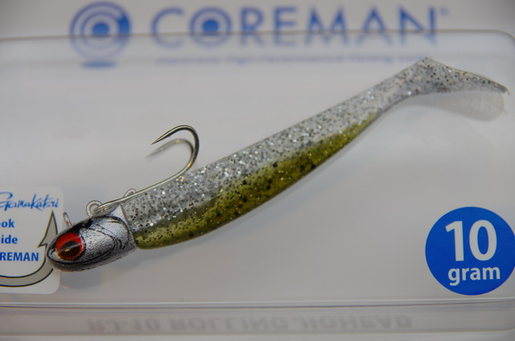
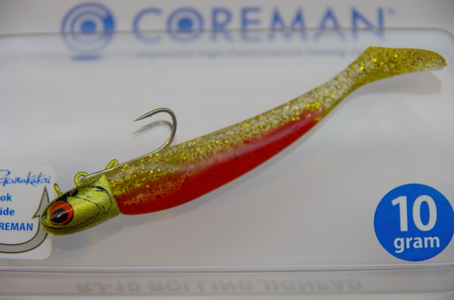
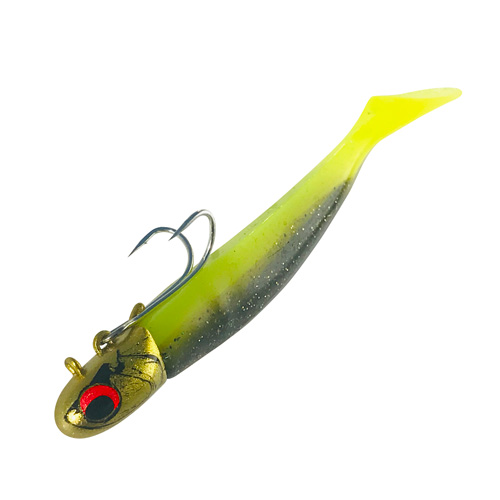

RJ-10
（ローリングジグヘッド）
RJ-10（ROLLING JIGHEAD 10）はCOREMAN（コアマン）のローリングジグヘッドです。
スレたシーバスに効くハイピッチなローリングアクション（ドリルロール）が最大の武器。ボディ上部にダブルフックをセットする独自システムで、高いフッキング率とバラシの少なさを両立しています。

画像出典:コアマン公式HP
スペック
- メーカー
- COREMAN（コアマン）
- タイプ
- ローリングジグヘッド（ジグヘッド＋ソフトワーム）
- 全長
- 85mm
- ウェイト
- 10g（ジグヘッド）＋3g（ワーム）＝総13g
- フック
- コアマン ダブル22 #6（がまかつ社特注品）
- セットワーム
- アルカリシャッド 75mm
- ターゲット
- シーバス
- 価格
- 1,200円（税別）
▼今すぐチェック

RJ-10の特徴
スレたシーバスに効くハイピッチローリングと、高フッキング率を両立する独自システム
-
ハイピッチなドリルロールアクション
細かく速いロールでスレたシーバスにも口を使わせるドリルロールアクション。バイブレーション主体のジグヘッドとは違うローリング特化の誘いが持ち味。
-
ダブルフック独自システムで高フッキング率
ボディ上部にダブルフックをセットする独自システムにより、高いフッキング率を実現。フックアップ後はフックが遊動となり、バラシも減少する。
-
コンパクト設計で飛距離も確保
コンパクトなボディながら飛距離も確保されており、シャローエリアのデイゲームに向いた設計。付属ワームはストレートキーパーで交換も容易。
RJ-10の使い方
基本はただ巻きでハイピッチなドリルロールアクションを出し、一定速度で巻き続けてローリングの波動でアピールする。
バイブレーション系のジグヘッドで反応が渋い、スレたフィールドで特に効果的。シャローエリアのデイゲームで、コンパクトな波動を丁寧に見せていくイメージで通すのが基本の組み立てです。
RJ-10の得意な状況
プレッシャーの高いフィールドで、バイブレーション系ルアーに見切られてしまうスレたシーバスを狙う状況が最大の出番。
シャローエリアのデイゲームや、コンパクトな波動でじっくり口を使わせたい場面に強い。強いアピールよりも自然な誘いでスレたシーバスを攻略したい時に選びたい1本です。
ワンポイント
強い波動のルアーで反応が出ない時ほど、RJ-10のコンパクトなローリングが効くことがあります。
フッキングが浅いと感じる時は、アワセを送り気味にしてダブルフックが遊動する特性を活かすとバラシを減らせます。
オススメカラー
RJ-10は全8色展開。ベイトパターンに合わせて選びやすいオススメカラーを厳選して紹介します。
 シルバーヘッド/マイワシ（#002）
シルバーヘッド/マイワシ（#002）
定番のイワシパターン。澄み潮でのナチュラルなアピールに。

シルバーヘッド/シャローベイト（#041）シャローエリアのベイトパターンにマッチするカラー。

ゴールドヘッド/アカキン（#057）マズメ時や濁り潮で強いアピールを出したい時に。

ゴールドヘッド/チャートベイト（#063）ローライト・濁り潮で存在感を出したい高アピールカラー。
画像出典:コアマン公式HP
RJ-10に似ているルアー
-
 VJ-10
コアマン
詳細はこちら＞
VJ-10
コアマン
詳細はこちら＞
同じコアマンの10gジグヘッド。VJ-10がバイブレーション、RJ-10がローリングと、同ウェイトでアクションを使い分けられる組み合わせ。
-
 IJ-16
コアマン
詳細はこちら＞
IJ-16
コアマン
詳細はこちら＞
同じコアマンのジグヘッド＋ソフトワーム。IJ-16は鉄板バイブの強波動、RJ-10はハイピッチローリングと、アピールの質を使い分けられる兄弟モデル。